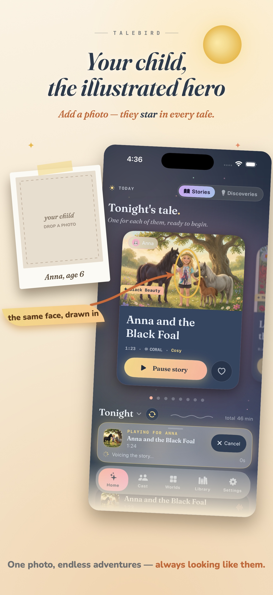
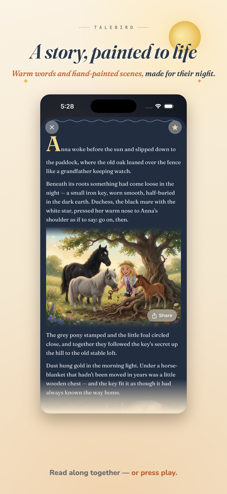
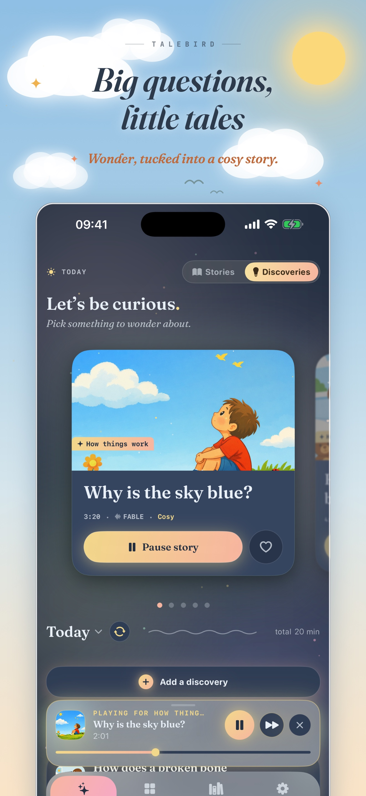

Ready when you are
Today and tonight fill themselves - queued, downloaded, one press to play.
Now on the App Store
For the drive, the wait, the wind-down - the moments you'd buy peace with a tablet and pay for it in guilt. We've all been there. TaleBird fills them instead with personalized stories and short discoveries your kids learn from, imagine along with, and talk about after. Queued and ready; you set it up once, then just press play.
Free to try. Built for iPhone and iPad.

A warm storybook page when you want to read together - or hands-free narration when your hands are full. Your call, whichever the moment needs. Add a photo and your child even becomes the illustrated hero of the page - a lovely extra, never the point.


The questions kids actually ask - why is the sky blue, how is glass made - turned into short, warm discoveries they'll want on repeat. Out of the car with something to talk about.
TaleBird is an indie, parent-built app for the moments a child wants another story, another answer, or another adventure - without another screen.
Today and tonight fill themselves - queued, downloaded, one press to play.
Audio first - hands free in the car, eyes closed at home. Never a screen.
Open the app and start. No login before the first story.
You set it up and choose the worlds. Kids only ever hear what you picked.
Not another screen to feel guilty about - the minutes you'd usually lose, turned into something your kids remember and you both talk about after.
TaleBird Plus unlocks more stories and longer tales.